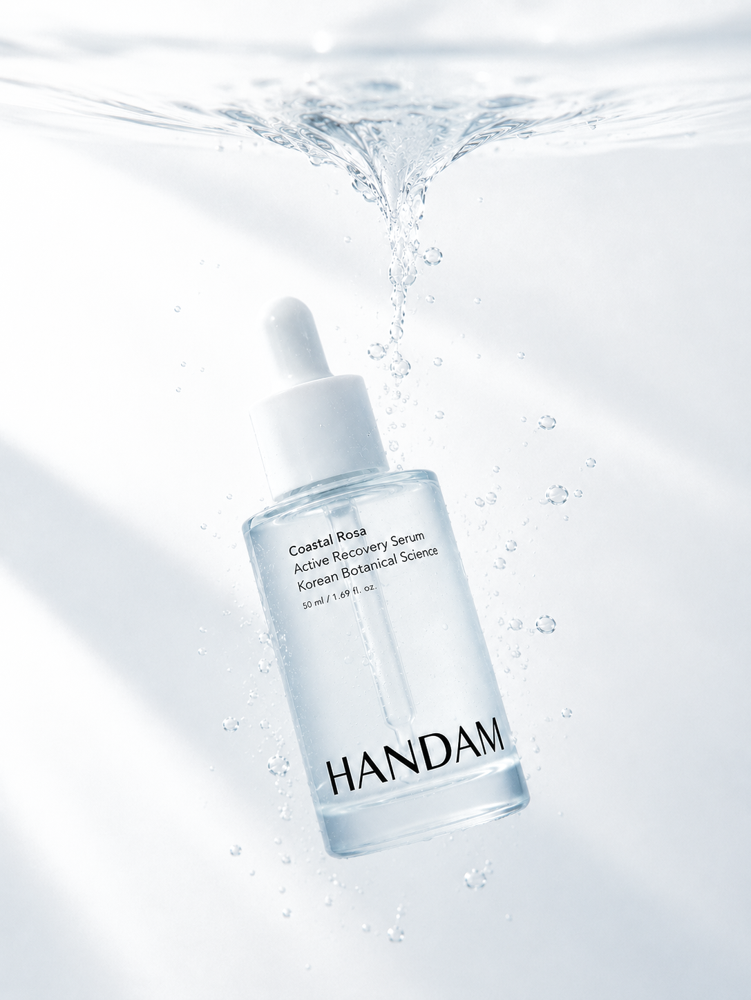
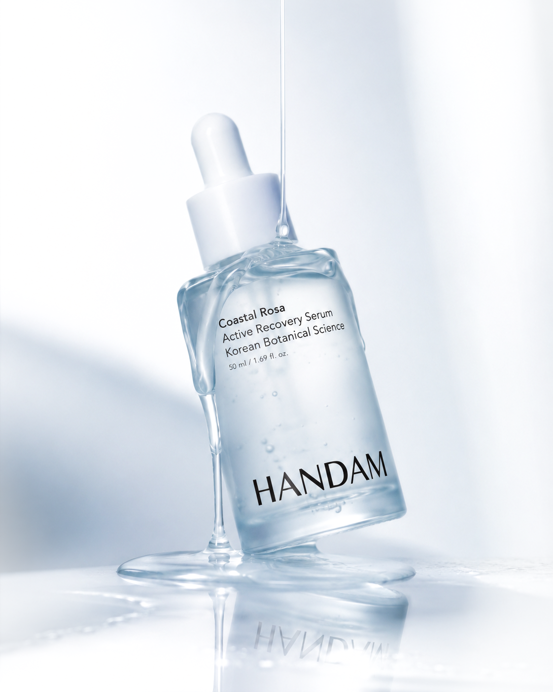
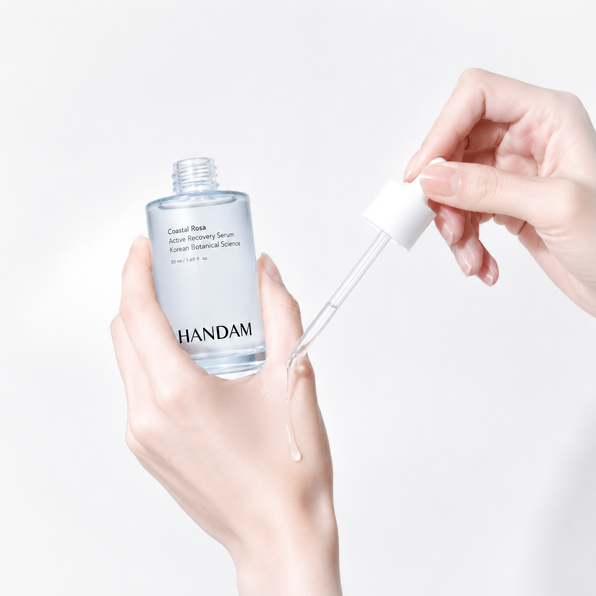
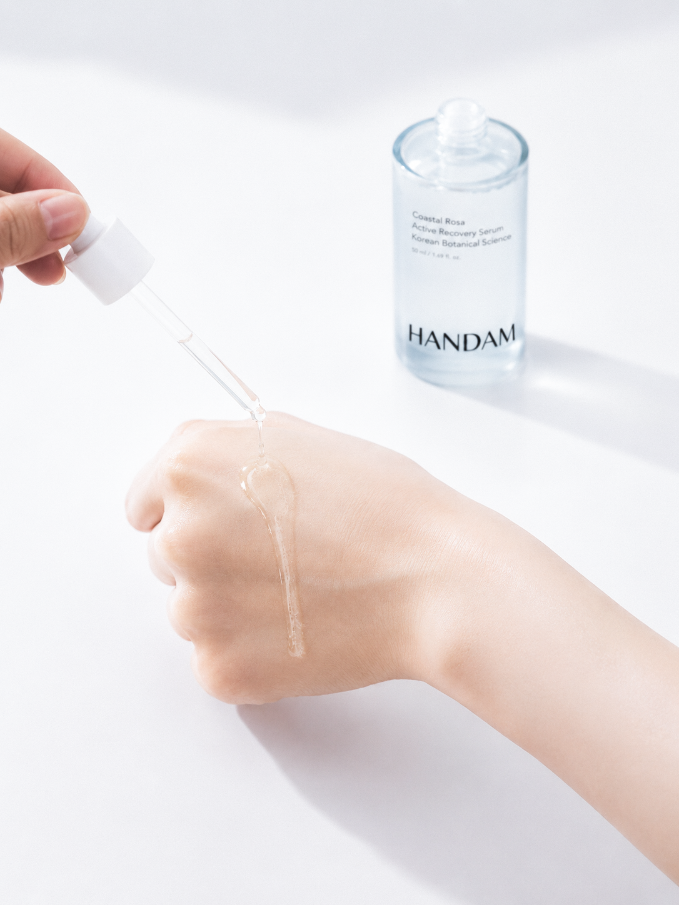
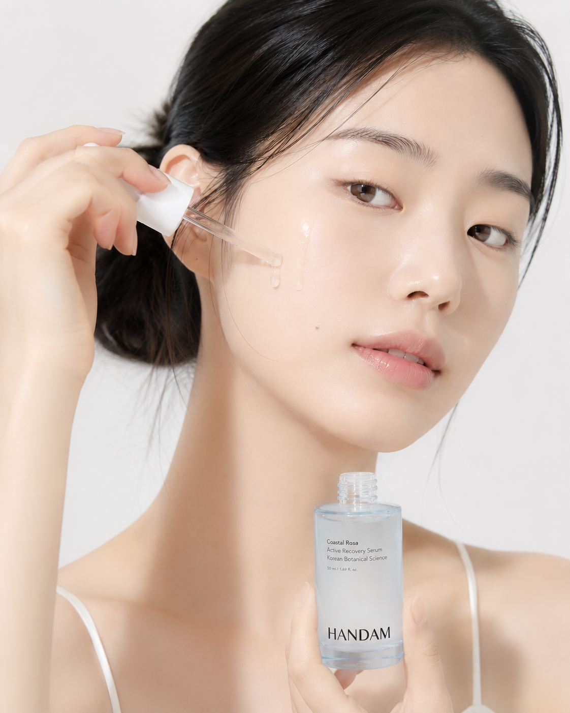

Native Korean Botanical · Active Recovery
Korea's native beach rose, reinterpreted through modern active technology. An antioxidant recovery serum that calms, restores the barrier, and delivers deep hydration — gentle enough for sensitive skin.

Philosophy
Most of K-beauty leans on the same OEM structures and imported actives. HANDAM takes a different path — rediscovering the value of Korea's own native plants and translating them, through science, into their most effective form for skin.
Not simply “natural” cosmetics, but functional active skincare grounded in evidence.
Built on Korea's own wild-growing botanicals, not imported defaults.
Ultra-fine micro-extraction draws actives out with higher efficiency.
Formulated for real, measurable improvement in skin condition.
Renewable native sourcing that respects both skin and origin.

The hero botanical
A botanical resource listed in Korea's National Species Inventory. Thriving along the country's coastlines, the beach rose offers a native-grown alternative to imported rosehip — rich in antioxidants, traceable, and sustainable to source.
Flower extract
Soothes, refines texture, and helps re-balance the skin.
Fruit extract
Vitamin C, polyphenols & carotenoids for antioxidant care.
Active Technology
Before extraction, the botanical is micronized to a particle size of 40–50 µm. Finer particles mean a larger active surface — so more of the plant's good is released, more evenly, with less waste.
More active compounds drawn from the same botanical.
Consistent distribution for predictable performance.
More of each harvest is put to use — less waste.
Actives protected and quality kept batch to batch.
The first release
An antioxidant recovery serum built on native beach rose flower and fruit — with the cushioned density of an ampoule and the lightness of water.

Rosa rugosa flower
Soothing · texture · balancing
Rosa rugosa fruit
Vitamin C · polyphenol · antioxidant
Hyaluronic acid
Replenishing · deep hydration
Panthenol
Barrier strengthening · protection
Centella asiatica
Calming · sensitive-skin care
Ceramide NP
Barrier support · moisture lock
Antioxidant
Eases stress from environmental exposure.
Barrier care
Maintains a healthy protective layer.
Soothing
Calms skin that feels sensitized.
Hydration
Deep, water-led moisture management.
Recovery
Helps keep skin in healthy condition.
Texture & feel
A medium-viscosity active serum that spreads as a rush of water, absorbs fast with minimal tack, and settles into a thin, comfortable moisture veil with a quiet glow. Made to wear in every season.


Who it's for
Made with women in their 20s and 30s in mind — for the everyday concerns of inner dryness, a tired barrier, and skin that simply needs calming.
Positioned as a premium active serum
The vision
HANDAM is more than functional skincare built on native ingredients — it's a Korean brand setting out to stand among the world's active beauty leaders.